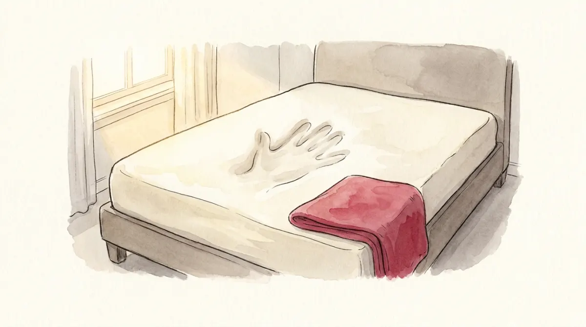

Press your hand into a memory-foam mattress. The foam gives instantly and a dent appears: that is the short run, where the push changes the shape of things. Hold still and watch: the foam creeps back, slowly, until the surface is flat again and only one thing has changed, the position of your hand against a recovered surface. That is the long run.
The economy is the mattress. A shock (a money expansion, a spending cut, an oil price jump) dents output first, because prices are sticky and cannot absorb it. Then prices gradually unstick, and as they adjust the dent heals: output creeps back to the size the pie chapters dictated, and the shock ends up absorbed entirely by the price level. AD-AS is the diagram of that healing, and it is the finale of the course:
In the cockpit you always flew at a fixed price level. Ask a new question: what would the equilibrium income be at a different P? Follow the chain. A lower P makes the existing money supply stretch further in real terms (M/P rises), which is the same as the CB printing money: LM shifts right, the parking fee r falls, investment wakes up, income rises. So:
P↓ → M/P↑ → LM right → r↓ → I↑ → Y↑
Lower prices, higher demand for output: plotted in (Y, P) space that is a downward-sloping curve, the aggregate demand curve AD. Every point on it is an IS-LM equilibrium; the curve is your whole cockpit, folded.
What shifts it? Exactly what shifted things in the cockpit. Fiscal policy (G↑ or T↓ pushes IS right → AD right). Monetary policy (M↑ pushes LM right → AD right). And any spending or money shock: the slides' example is a drop in velocity (people hold money tighter, spend less), which pulls AD left just like a money contraction.
Demand alone fixes nothing; you need to know what suppliers do. The course draws two supply curves for two time scales:
The bridge between them is one rule, straight from the slides:
| If in the short run... | then over time P will... |
|---|---|
| Y > Ȳ (economy running hot) | rise |
| Y < Ȳ (economy in a slump) | fall |
| Y = Ȳ | stay put |
Price adjustment is the force that walks the economy from its short-run equilibrium to its long-run one. You are about to drive that walk yourself.
The blue curve is AD, the amber line is the sticky short run (SRAS), the dark wall is the ch. 4 long run (LRAS at Ȳ = 1000). Hit the economy with a shock, read the dent, then press the green button and let time pass.
Expand M by 10% and fast-forward. Output visits 1100 and comes home to 1000; the price level ends exactly 10% higher; and behind the scenes M/P, and with it the interest rate, are back where they started. Money bought a temporary boom and a permanent price tag. That journey, frozen into four exam options, is mock-2 question 13.
Mock-2 question 13: horizontal SRAS, economy at its long-run equilibrium. M increases. What happens to r, Y, P in the short run, and then in the long run relative to that short run?
Short run (P frozen): more money → LM right → r falls, Y rises above Ȳ, P constant. The dent.
Long run (relative to the short-run moment): Y > Ȳ, so P rises; rising P shrinks M/P, LM slides back left, so r rises back and Y falls back to Ȳ. The spring-back.
Answer: SR: r decreases, Y increases, P constant; LR: P increases, Y decreases, r increases. Every AD-AS question is these two frames; the only work is keeping them in order.
Demand shocks dent the mattress from above. Supply shocks attack the foam itself: they change firms' costs and therefore the prices they charge. OPEC's oil embargo raised oil prices 11%, then 68%, then 16% across 1973-75; production costs jumped, firms passed them on, and the SRAS line itself lurched upward. Result, visible in the machine: prices up and output down at the same time. The 1970s data in the slides shows exactly that double hit, inflation and unemployment rising together (they even had a name for it, stagflation), and the mirror-image episode in the mid-1980s, when oil collapsed and both fell.
Now the dilemma. After an adverse oil shock the central banker holds two bad options:
Try both in the machine. This trade, pain now against prices forever, is what "stabilisation policy" means in practice, and it is the cliffhanger that Macro-07's Phillips curve turns into arithmetic.
From the exercise sheet: predict Y and P, both horizons, one shock at a time. Horizontal SRAS, economy starting at long-run equilibrium.
| Shock | Short run (P stuck) | Long run |
|---|---|---|
| M↑ or G↑ or T↓ (AD right) | Y↑, P same | Y back to Ȳ, P higher |
| M↓ or G↓ or T↑ (AD left) | Y↓, P same | Y back to Ȳ, P lower |
| Adverse supply shock (SRAS up) | Y↓, P↑ | back to original Y AND P (if CB waits) |
| ...accommodated by CB | Y restored fast | P permanently higher |
| AD slope logic | P↓ → M/P↑ → r↓ → I↑ → Y↑ |
| SRAS / LRAS | horizontal at P̄ / vertical at Ȳ = F(K̄, L̄) |
| The adjustment rule | Y > Ȳ: P rises · Y < Ȳ: P falls |
| Money in the long run | neutral: only P keeps the change |
Two frames per question: the dent, then the spring-back. That is the whole exam recipe.
Six questions, real mock-exam style: +1 right, −⅓ wrong, 0 skip.